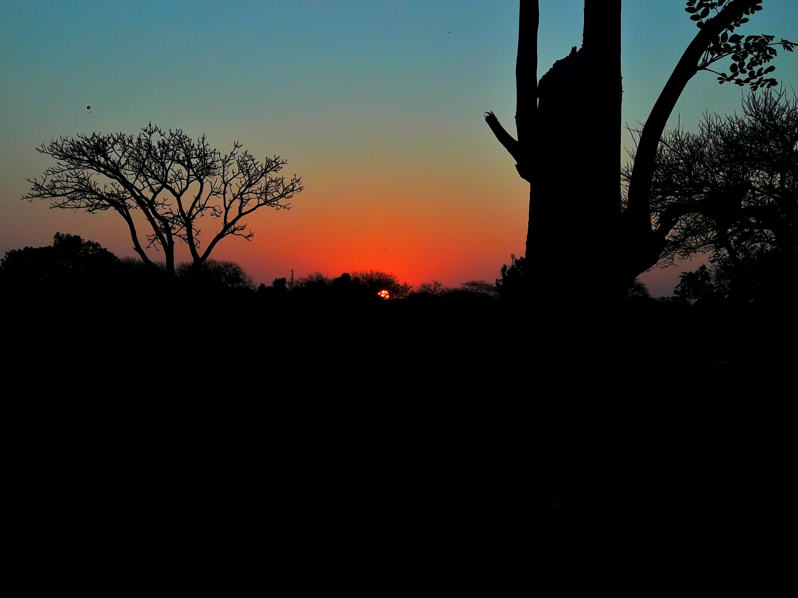
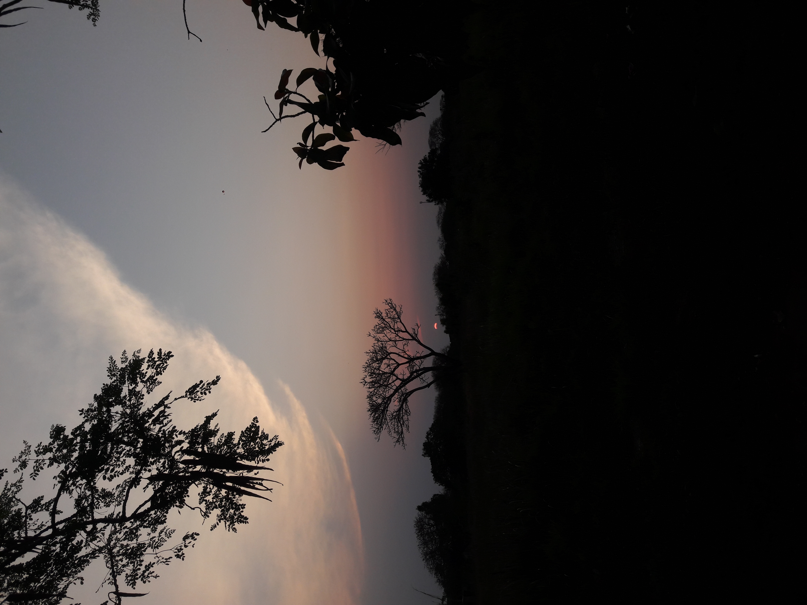
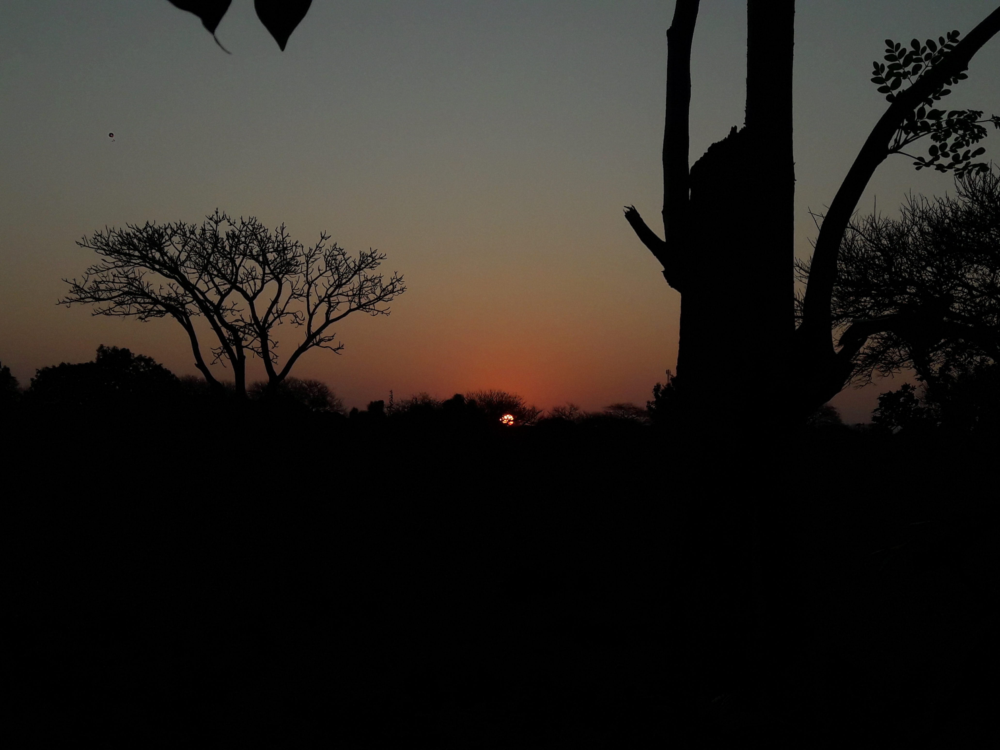

silêncio • luz • horizonte
Onde o sol se despede e a floresta sussurra.
Um convite para respirar devagar.
Entre galhos silhuetados e o céu em chamas, a natureza escreve sua poesia sem palavras. O Naturexz nasceu para celebrar esses instantes — o brilho alaranjado do entardecer, o vento nas copas e a calma que só existe longe do barulho.
Cada fotografia é um convite: desconecte, caminhe, observe. O mundo natural não cobra nada, apenas pede presença.

Clique para ampliar e deixar a luz tomar a tela.


"Na natureza, nada se apressa —
— Lao Tsé
e mesmo assim tudo se realiza."
Receba novas trilhas, amanheceres e histórias da floresta.